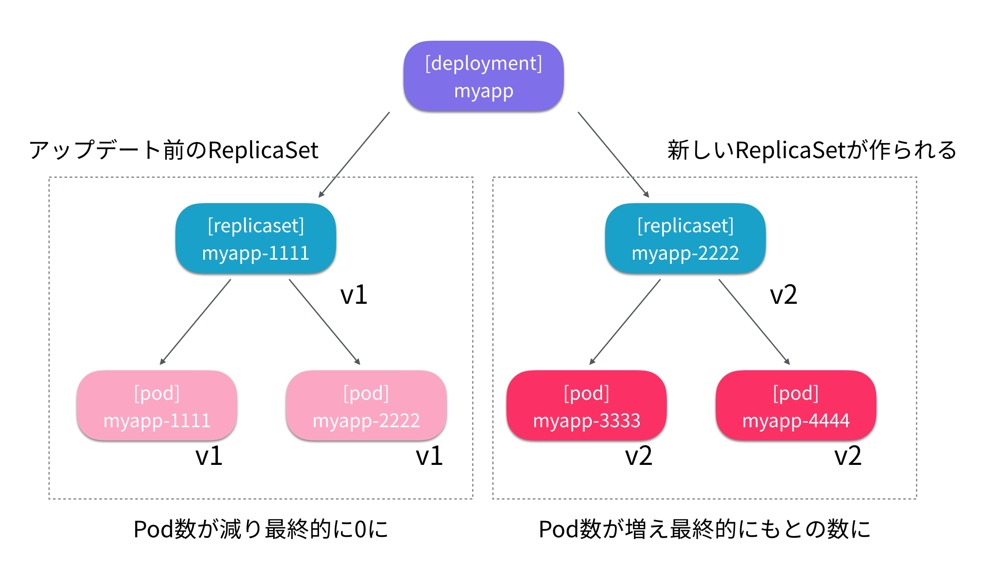

DockerとはDocker社が2013年に開発したコンテナ仮想化のためのOSS
Dockerのようなコンテナ環境ではDockerfileという定義ファイルで同一のコンテナイメージを簡単に作成可能
Docker Hubといったコンテナレジストリによるエコシステムが整備されている
インフラチームとアプリケーションチームで分業している組織だと、 初期設定後にミドルウェア設定変更などが必要になるたび、インフラチームに依頼する必要がある
Dockerを利用することでインフラチームへの依頼が不要になり上記のような組織的な課題を解決できる
Dockerには上記の例を始めとした多くのメリットがあるが、一方で問題も抱えている
システム構成が拡大してくると、複数のコンテナを連動して一つのサービスを実現することになる
多くのコンテナが乱立していくと、コンテナ間の通信と可用性の確保が課題となってくる
もし、コンテナが稼働している仮想マシンに問題があれば、すべてのコンテナが停止してサービス全体の停止に繋がることも考えられる
Kubernetes（以降、k8s）のようなコンテナオーケストレーションツールは多くのコンテナを運用する上での課題を解決するために存在する
k8sとはGoogle社が2014年に開発したコンテナオーケストレーションツール
k8sではデータプレーンと呼ばれるサーバを複数起動し、その上に仮想的なオーケストレーションレイヤーを構築し、そこでコンテナを起動する
これによってコンテナ利用者からはコンテナ群を一つの大きなマシンリソースとして透過的に見ることができ、インフラを抽象化することができる
k8sのコントロールプレーンは以下のよう
k8sの習得ハードルが一定以上となっているのは下記図のコントロールプレーンやその他のコンポーネントが存在するから
オブジェクトの関係性は以下のようになっている

k8sの適用を検討する上で最も障壁となるのは、コントロールプレーンの維持運用の難しさで、 その維持運用をAWSが代行（マネージド）してくれるのがAmazon EKS(Elastic Kubernetes Service)
EKSは以下のコンポーネントがマネージド